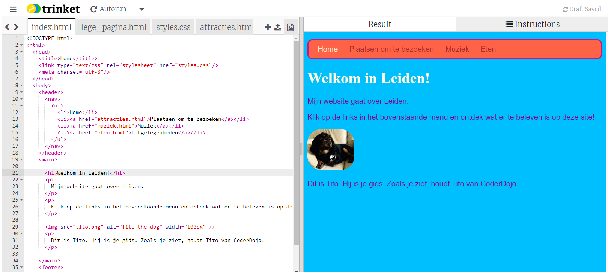

Ga naar de start trinket. De voorbeelden komen vooral uit dit project. 
Als je wil, kan je werken met een website die je al eerder hebt gemaakt.
Je kunt je werk bewaren door in het menu 'Share' op 'Link' te klikken. Je krijgt een link die je ergens kunt opslaan, bijvoorbeeld in een tekst document of in de email.
Let op! Elke keer als je iets aanpast, krijg je een
nieuwe link.